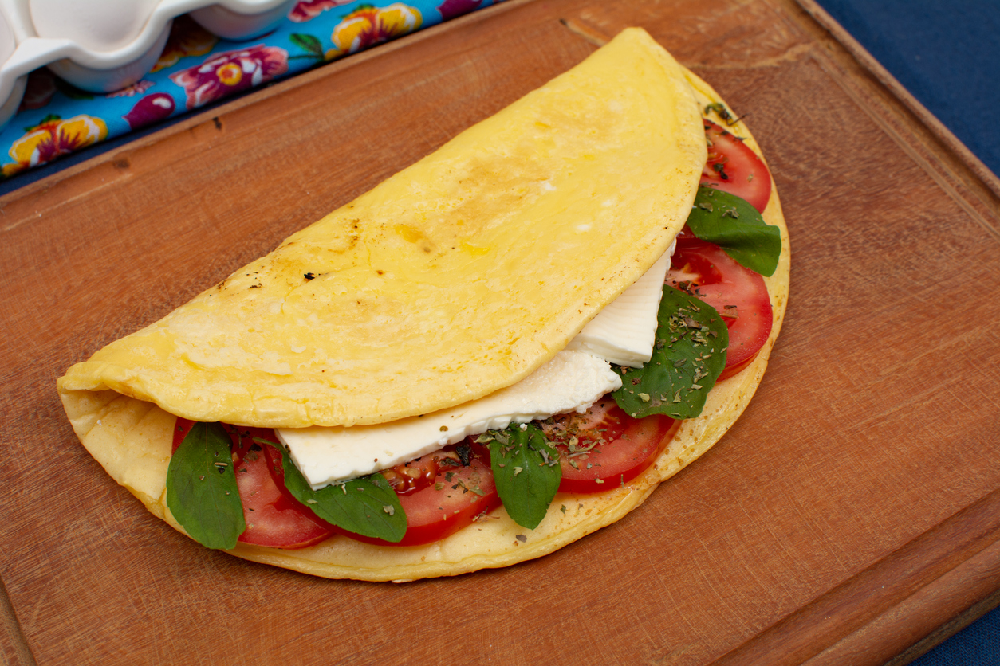

Delicious Crepioca Recipe

Ingredients:
- 1 egg
- 2 tablespoons of tapioca flour
- Salt to taste
- Filling of your choice (cheese, ham, chicken, etc.)
Preparation:
- In a bowl, beat the egg with a fork.
- Add the tapioca flour and mix well.
- Season with salt to taste.
- Heat a non-stick pan over low heat.
- Pour the batter into the pan, spreading it evenly.
- When the crepioca is golden brown on one side, flip it over and add the filling.
- Fold the crepioca in half and serve immediately.